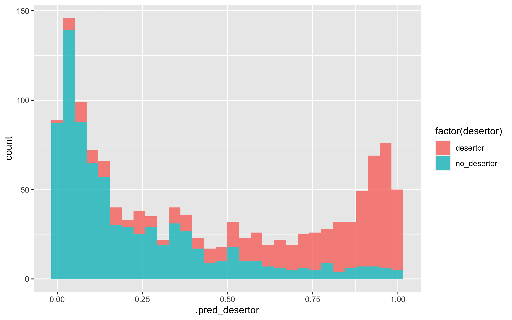
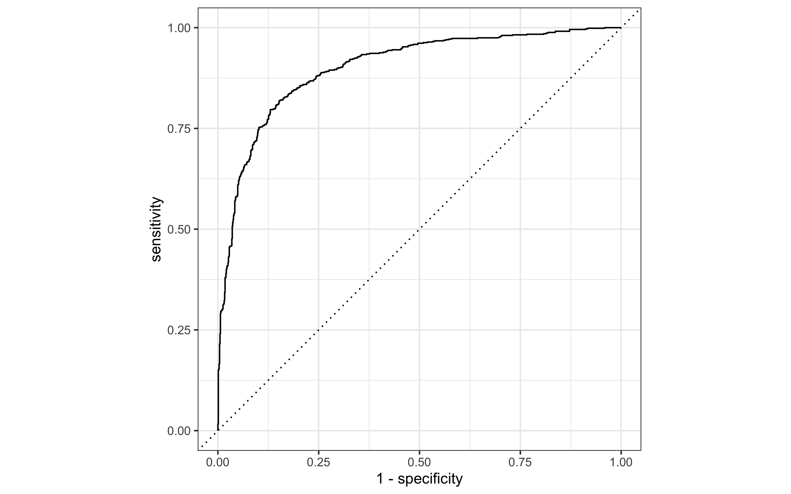

4 Preprocesamiento e ingenieria de entradas:
Usaremos una receta más simple (no necesariamente tenemos que poner interacciones, categorización de entradas, transformaciones no lineales):
receta <- recipe(desertor ~
sexo +
prom_sec +
cambio_esc +
asistencia +
reprueba +
prom_bach +
becado +
desertor_amigos +
desertor_hermanos +
faltaba_dinero +
prob_turno +
disg_estudiar +
mejor_trabaja +
no_entiende +
cambio_casa +
bulling +
disciplina_estricta +
discriminado +
prob_familia +
te_casaste +
estudiaran_hermanos +
embarazo +
estudiar_no_sirve +
baja_autoestima +
trab_est +
ncuartos +
dvd +
piso_tierra +
auto +
microondas +
computadora +
agua +
telefono +
internet +
excusado +
letrina +
cable +
tipo_escuela +
vive_con +
confia_esc +
confia_familia +
confia_amigos +
alcohol,
data = entrena) %>%
step_dummy(all_nominal_predictors()) %>%
step_zv(all_predictors()) #step_zv remove variables that contain only a single value.Dimensión de los datos:
prep(receta, entrena) %>% juice() %>% dim()## [1] 5206 101Empezamos con parámetros más o menos default
modelo_boosting <- boost_tree(learn_rate = 0.01, trees = 3000,
mtry = 5, tree_depth = 7, sample_size = 0.8) %>%
set_mode("classification") %>%
set_args(objective = "binary:logistic")
flujo <- workflow() %>% add_recipe(receta) %>% add_model(modelo_boosting)
flujo_fit <- fit(flujo, entrena)## [08:21:23] WARNING: amalgamation/../src/learner.cc:1115: Starting in XGBoost 1.3.0, the default evaluation metric used with the objective 'binary:logistic' was changed from 'error' to 'logloss'. Explicitly set eval_metric if you'd like to restore the old behavior.ajuste_xgboost <- flujo_fit %>% extract_fit_engine() %>% pluck("evaluation_log") %>%
as_tibble()
ggplot(ajuste_xgboost, aes(x=iter, y = training_logloss)) + geom_line()
valida <- testing(encuesta_part_val$splits[[1]])
preds_val <- predict(flujo_fit, valida, type = "prob") %>%
bind_cols(valida %>% select(desertor))mis_metricas <- metric_set(mn_log_loss, roc_auc)
mis_metricas(preds_val, truth = factor(desertor), .estimate = .pred_desertor, event_level = "first")## # A tibble: 2 × 3
## .metric .estimator .estimate
## <chr> <chr> <dbl>
## 1 mn_log_loss binary 0.420
## 2 roc_auc binary 0.889preds_entrena <- predict(flujo_fit, entrena, type = "prob") %>%
bind_cols(entrena %>% select(desertor))mis_metricas <- metric_set(mn_log_loss, roc_auc)
mis_metricas(preds_entrena, truth = factor(desertor), .estimate = .pred_desertor, event_level = "first")## # A tibble: 2 × 3
## .metric .estimator .estimate
## <chr> <chr> <dbl>
## 1 mn_log_loss binary 0.228
## 2 roc_auc binary 0.979ggplot(preds_val, aes(x = .pred_desertor, fill = factor(desertor))) + geom_histogram(alpha=0.8)
4.0.1 Preparar solución
La siguiente es la solución al problema que estamos planteando.
encuesta_test <- testing(encuesta_part_inicial)
preds_prueba_sol <- predict(flujo_fit, encuesta_test, type="prob") %>%
bind_cols(encuesta_test %>% select(desertor))
mis_metricas <- metric_set(mn_log_loss, roc_auc)
mis_metricas(preds_prueba_sol, truth = factor(desertor), .estimate = .pred_desertor, event_level = "first") ## # A tibble: 2 × 3
## .metric .estimator .estimate
## <chr> <chr> <dbl>
## 1 mn_log_loss binary 0.394
## 2 roc_auc binary 0.901Resultados:
- Esto modelo logra un score de \(0.4414\)
- Una curva ROC de \(.9021\)
roc_graf <- roc_curve(preds_prueba_sol, truth = factor(desertor), .pred_desertor,event_level = "first")
autoplot(roc_graf)